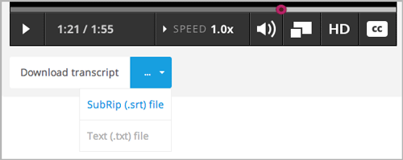
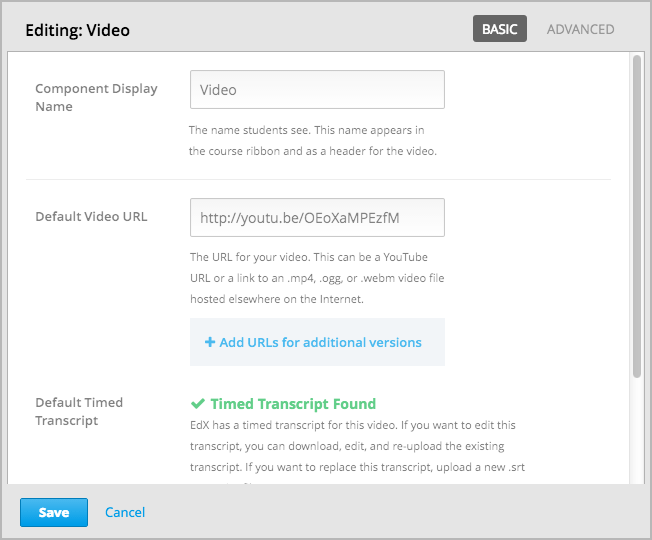
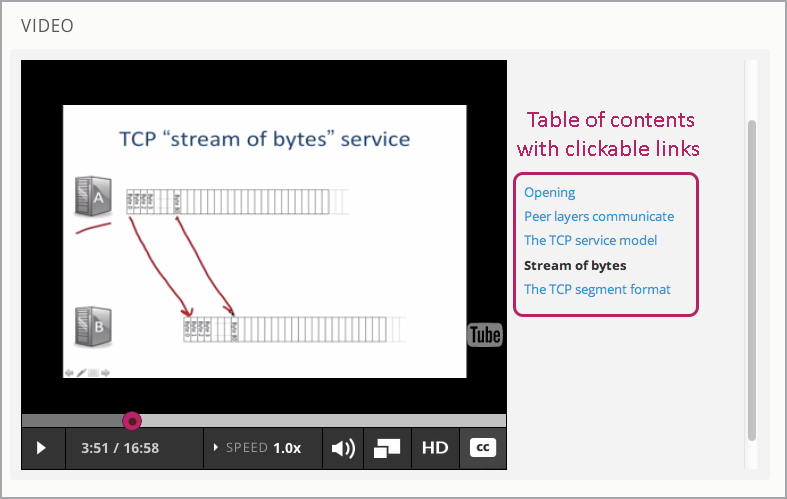
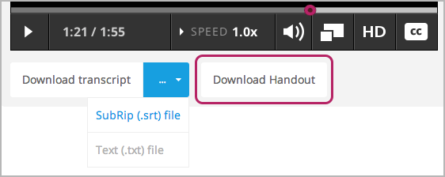
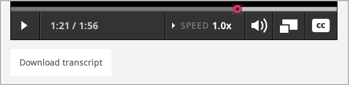
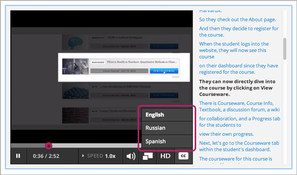

您能创建一个您的演讲影片，并且可以将其他组成部分，例如，讨论和遇到的问题，添加到课程中是学生积极学习。 将视频添加到您的课程中有以下几个步骤。
Note
在将影片添加到您的课程之前，回顾 最佳媒体使用方案 。
为了帮助教员团队保护视频资源，edX播放器默认隐藏视频URL。 此默认设置应用于所有视频文件，包括YouTube视频和您发布在其他网站的视频。 如果您选择了 允许下载视频 学生仍可以下载视频文件。 更多关于在YouTube之外的网站发布视频的信息，请参考 步骤3 在网上发布影片 。 更多关于您可以设置的选项请参考 高级选项.
您的影片能保存任何您想要保存的内容。edX101 Overview of Creating an edX Course 中的 Creating Videos 部分能够帮助您如何创建影片内容。
创建影片时，edX建议参照以下压缩详述。
| 输出 | 发布到You Tube | AWS S3将下载好的文件发布到AWS S3上 |
|---|---|---|
| 编码解码器 | H.264 .mp4 | H.264 .mp4 |
| 分辨率和帧速率 | 1920x1080, progressive, 29.97 fps | 1280x720, progressive, 29.97 fps |
| 版本 | 1.0 | 1.0 |
| 位速率 | VBR, 2 pass | VBR, 2 pass |
| 目标可变速率 | 5 mbps | 1 mbps |
| 最大可变速率 | 7.5 mbps | 1.5 mbps |
| 声频 | AAC 44.1 / 192 kbps | AAC 44.1 / 192 kbps |
Note
一般情况下，您导出文件的帧速率和创建时相同。 例如，如果您在一个使用PAL系统的国家创建文件，您导出的的文件将为25 fps而不是NTSC标准的 29.97 fps。
edX视频播放器支持mp4, .webm, .mpeg, and .ogg格式。 然而，为了确保所有标准浏览器均能播放您的影片， 我们强烈建议您使用 .mp4 format 格式。
我们强烈建议您将影片与有限的副本相结合。 对于那些母语是非英语、不能看见影片或这想要回顾影片内容的学生来说，副本对他们是十分有用的。 您的影片播放的同时副本也会自动滚动播放。要是学生点击副本中的单词，影片会显示该词。 您能让学生下载副本以便他们能在线阅读。在创建影片组件时，您能将影片和副本相结合。
自动播放影片的前提是您的副本必须是srt格式的文档。 若想创建和保存srt格式的副本，您可以和提供字幕服务的公司合作。 EdX可以和3Play Media公司合作。You Tube也能提供字幕服务。
您上传srt文档时，文本文件会自动生成。学生可以下载srt文档或文本文档（txt）。 若您允许学生下载副本，影片下方会出现下载副本按钮。 学生能够自行选择SubRip文档（.srt文档）或文本文档（.txt）来下载.srt格式或文本文档（txt）格式的副本。
您也可以提供其他形式的副本，如 .pdf，您也可以使用其他语言。 更多选择信息请参照 附加副本.
Note
以前有一些课程使用 .sjson文件作为视频副本。 现在我们已经不再推荐这种方式。 然而，如果您的副本是 .sjson格式，请参考 操作.sjson文档的步骤 。
所有课程应在You Tube上发布。通过默认设置，edX影片播放器能够播放You Tube的影片。
然而，由于You Tube不是在任何地方下均有效的，所以我们建议您将影片也上传到至第三方网站，例如 Amazon S3. 当学生浏览您的课程时，要是You Tube不适用于学生所在地或You Tube无法播放，上传至备用网站的影片能自动播放。 您也能让学生从备用网站上下载影片。
在网上公布影片之后，确保您有影片的统一资源定位符（URL）。 若您在多处复制了您的影片，确保您有每一个副本所在位置的统一资源定位符（URL）。
在创建影片后，将影片上传至 YouTube.
Note
You Tube只能上传最长15分钟的影片。 如果您选择0.75倍播放速度，您必须确定影片片段只有11.25分钟，如此一来才能确保影片全部上传至You Tube。 You Tube有提供付费机制可以解除这个限制。
您能使用任何备用网站。然而，切记您上传影片的网站可能需要面对网络繁忙的情况。
Note
最终您上传至第三方网站的影片统一资源定位符（URL）必须是mp4, .webm, .mpeg, 或.ogg格式。
（为了确保所有标准浏览器均能播放影片，我们强烈建议您用mp4,或webm.格式）EdX不支持类似Vimeo等网站上的视频。
如果您（或您的贝塔测试员或学生）在看课程视频时遇到错误，也许是浏览器的原因。
请确保浏览器为最新版本。例如，一些旧版本的Mozilla Firefox浏览器无法播放 .mp4格式的视频。 这个问题不存在新版本中。
更多信息请参考 Media formats supported by the HTML audio and video elements.
确保文件元数据，尤其是MIME类型的元数据，在主站中正确设置。 IE 10浏览器无法播放未设置的MIME格式视频。 例如，确保.mp4文件的HTTP header中的Content-Type设置为video/mp4， .webm文件的HTTP header中的Content-Type设置为video/webm 。
亚马逊存储服务的 控制台用户指南 提供了关于如何在视频备选网站中设置元数据的信息 editing object metadata.
在新增组件下，点击影片
当出现新的影片组件时，点击编辑。影片编辑者能看见原始码。
您能自行替代默认值。
在显示组件名称栏位，填入您想让学生在鼠标划过页面时显示的提示文字。 这个文字将成为影片的标题文字。
在默认影片统一资源定位符（URL）栏位，输入影片的统一资源定位符（URL）。 例如，统一资源定位符（URL）可能类似于以下例子中的一种。
http://youtu.be/OEoXaMPEzfM
http://www.youtube.com/watch?v=OEoXaMPEzfM
https://s3.amazonaws.com/edx-course-videos/edx-edx101/EDXSPCPJSP13-G030300.mp4
https://s3.amazonaws.com/edx-videos/edx101/video4.webm
Note
为了确保所有学生均能播放影片，您能在互联网上公布影片的其他版本。 之后将这些影片的统一资源定位符（URL）添加至下方影片默认统一资源定位符（URL）。 这些统一资源定位符（URL）不能是You Tube网站的统一资源定位符（URL）。 想要将统一资源定位符（URL）添加至其他版本中，点击添加其他版本统一资源定位符（URL）。 与学生们电脑兼容的第一个列明影片将播放。
下一个步骤是默认限时副本，选择一个选项。
若edX已存有您的影片，例如，若您正在播放现有课程中的影片，Studio会自动找到副本并将其与影片连接起来。
若您想修改副本，点击下载副本及编辑。您能改动影片并通过点击上传新副本完成上传。
若edX没有影片副本，而You Tube有的话，Studio会自动找到You Tube网站上的副本并询问您是否输入副本。 若要使用You Tube网站上的副本，点击输入You Tube副本。 （若您想修改You Tube副本，将其输入Studio，接着点击下载副本及编辑。） 这样，您能修改影片并通过点击上传新副本完成上传。
若edX和You Tube都有您的副本，但是edX过期的话，您将收到询问您是否用You Tube副本替代edX副本的消息。 若同意，点击是，You Tube副本替代edX副本。
若edX和You Tube都没有您的副本，并且您的副本格式是.srt的话，点击上传新副本完成上传。
Note
可自由选择点击高级，设置影片更多选项。 欲知每项选项详情，请看 高级选项.
点击保存
影片组件的高级选项中会出现以下选项。
| 显示组件名 | 您想让学生看见的名称，必须与原始码显示名是保持一致。 |
| 默认时限副本 | 默认时限副本的原始码用的是副本文档的名称。 此区域是自动添加的。 您不需要改变这项设置。 |
| 同意下载副本 | 详细说明您是否同意让学生下载时限副本。 若您选择“是”，影片下方会显示下载文档的链接。 通过默认设置，在你上传.srt副本文档的同时会生成文本文档副本。 您甚至成同意下载副本，学生们就能下载.srt副本及文本文档副本。 同时，若您希望能下载不同格式的文本， 例如，.pdf，通过上传讲义，将其上传至Studio。 |
| 可下载副本URL | 非.srt格式副本的统一资源定位符（URL）会发至文件和上传页面或公布在网上。 学生们能在影片下方看见下载非.srt格式副本的链接。 当您将副本添加至此区域时，只有您添加的附件能下载。 非.srt格式副本及文本文档副本无法下载。 若您提供的副本格式并非.srt，我们建议您通过上传讲义选项，上传学生讲义。 欲知更多信息，请见 附加副本 。 |
| EdX视频ID | 此选项只用于使用edX制作主视频文件的课程团队。 |
| 许可证书 | 您可以选择为视频设置许可证书。 以满足您发布与课程许可证不同的视频许可证的需求。
|
| 副本展示 | 详细说明是否通过默认设置，将副本和影片一起上传。 |
| 副本语言 | 副本文件可以添加任何语言。 欲知更多信息，请见 其他语言的副本. |
| 上传讲义 | 允许讲义和影片一起上传。 您的讲义可以是任何格式的。 学生们可以在影片下方点击下载讲义完成下载。更多信息请见 附加副本. |
| 视频仅在网页播放 | 如果您选择 是 ，学生只能在浏览器中播放该视频。 如果您选择 否 ，学生可以使用任何应用播放该视频。 包括网页浏览器和移动应用。 |
| 同意下载影片 | 若学生们无法使用edX播放器或You Tube， 请详细说明他们能否下载此影片不同格式的版本。 若您选择“是”，必须在影片文件统一资源定位符（URL）区域 中添加至少一个非You Tube统一资源定位符（URL）。 |
| 影片文档URL | 您发布过的非You-Tube版本的视频的URL。 最终，每个统一资源定位符（URL）必须是mpeg, .webm, .mp4, or .ogg格式， 而且不能是You Tube统一资源定位符（URL）。 每个学生均能浏览与其电脑兼容的第一个列明的影片。 您必须同意影片下载，学生才能下载影片。 为使所有标准浏览器能播放您的影片， 我们强烈建议您使用.mp4 或 .webm格式。 |
| 视频ID | 此选项仅用于使用edX制作主视频文件的课程团队。 |
| 影片开始时间 | 若您不想播放所有视频，能设置影片开始时间。 将格式设置为 HH:MM:SS。最大值为23:59:59。 Note 在移动应用上下载并播放该视频的学生可以看到完整的视频文件。 只有在浏览器中播放视频时有特定开始时间。 |
| 影片结束时间 | 若您不想播放所有视频，能设置影片结束时间。 将格式设置为 HH:MM:SS。最大值为23:59:59。 Note 在移动应用上下载并播放该视频的学生可以看到完整的视频文件。 只有在浏览器中播放视频时有特定结束时间。 |
| YouTube ID | 若您将独立且不同播放速率的影片上传至You Tube， 在此区域输入这些影片的You Tube号。 (拥有You Tube号的人能享受 .75x、1.25x及1.5x倍播放速度) |
通过将可点击的.srt格式副本添加到影片的各部分，您能添加影片目录表。 学生观看影片时，他们能点击影片播放器下方的CC按钮，实现影片主要副本和影片目录表切换。
为添加目录表，您将与第三方网站合作，以创建.srt格式副本文档。 之后，您将通过影片组件设置的副本语言将.srt格式副本与影片相结合。
.srt格式副本文档的作用是充当目录表，在保存其后，打开您的影片组件。
在高级选项卡中，下拉至副本语言，点击添加。
下拉列表出现之后，选择目录
随后，显示上传按钮。
点击上传，浏览.srt格式副本文档，点击打开。
在上传翻译对话框栏位，点击上传。
由于默认设置，您上传.srt格式文档的同时文本文档（txt）会生成。 您设置同意下载副本之后，学生们能下载.srt格式或文本文档（txt）格式文档。 影片下方出现下载副本按钮，鼠标划过此按钮时，学生们能看到.srt格式或文本文档（txt）格式选项。
若您想要上传.pdf、.srt、txt格式副本的话，我们建议您在上传讲义区域操作。 您这样操作的话，上传讲义按钮会出现在下载副本按钮右方，学生们能下载 .srt, .txt格式或与讲义格式相同的副本。
利用上传讲义区域，添加下载副本：
在Studio添加上传讲义特性之前，确保一部分课程已公布至文档和上传页面或公布在网上， 接着将链接添加至影片组件文档中。 我们不建议您这样做。 您使用这种方法时，会显示下载副本，但是您添加的副本只能下载。 无法识别.srt 和文本文档（txt）格式的副本。
若您想使用此方法，将您的影片公布在网上，并将统一资源定位符（URL）添加至副本， 该副本位于下载副本统一资源定位符（URL）区域内。 但是，切记这样一来，学生将无法下载srt 和文本文档（txt）格式的副本。
您能上传其他语言的影片副本。 想这样做的话，您需要与第三方服务商合作，以便保存每种语言的.srt格式的副本文档， 之后将.srt格式文档与Studio中的影片相链接。
您在保存其他语言的.srt格式文档之后，打开影片组件。
在高级选项栏位，下拉至副本语言，点击添加。
在显示的下拉菜单栏位，选择您想添加的副本语言。
语言下方显示上传按钮。
点击上传，浏览.srt格式文档语言，点击打开。
在上传翻译对话框栏位，点击上传。
添加任意附加语言，操作同步骤2至步骤5相同。
Note
确保所有您的副本文档名与每个影片及语言的名称不同。 您在至少一个影片组件中使用相 同的副本名称，每个影片播放的都是同一副本。 为了避免这一问题发生，您可根据影片文档名和副本语言，命名您的外语副本名称。
例如，您有两份影片，分别命名为影片1.mp4和影片2.mp4。 两个影片均有俄语和西班牙语副本。您能将第一个影片命名为影片1RU.srt和影片1 ES.srt， 将副本命名为影片2RU.srt和影片2 ES.srt。
学生浏览影片时，他们能点击影片下方的CC按钮，选择语言。
若您的课程使用的是.sjson文档，您需要将影片.sjson文档上传至文档和上传页面。 明确说明.sjson文档在影片组件中的名称。
Note
只有过去使用过.sjson文档的课程才能使用.sjson文档。所有新课程应用.srt文档。
选择媒体公司，例如3Play，并保存.sjson文档
修改.sjson文档名称以便使用以下格式：subs_FILENAME.srt.sjson。
subs_{video filename}.srt.sjson
例如，若您的影片名称为第一讲a， 那么您.sjson文档名称必须是 subs_Lecture1a.srt.sjson.
将影片的.sjson文档上传至文档和上传页面。
创建影片新组件。
在原始码栏位，输入您想让学生在显示组件区域看见的名称。
在影片统一资源定位符（URL）区域，输入影片统一资源定位符（URL）。例如，您会看到类似以下的情况：
http://youtu.be/OEoXaMPEzfM
http://www.youtube.com/watch?v=OEoXaMPEzfM
https://s3.amazonaws.com/edx-course-videos/edx-edx101/EDXSPCPJSP13-G030300.mp4
点击高级选项。
在默认时限副本区域，输入影片的名称。 不能包含 subs_ 或 .sjson。 例如，操作步骤2时，您只能输入 Lecture1a 。
设置您选择的其他选项。
点击保存。
{kind=link}
{kind=link}
{kind=link}
{kind=link}
{kind=link}